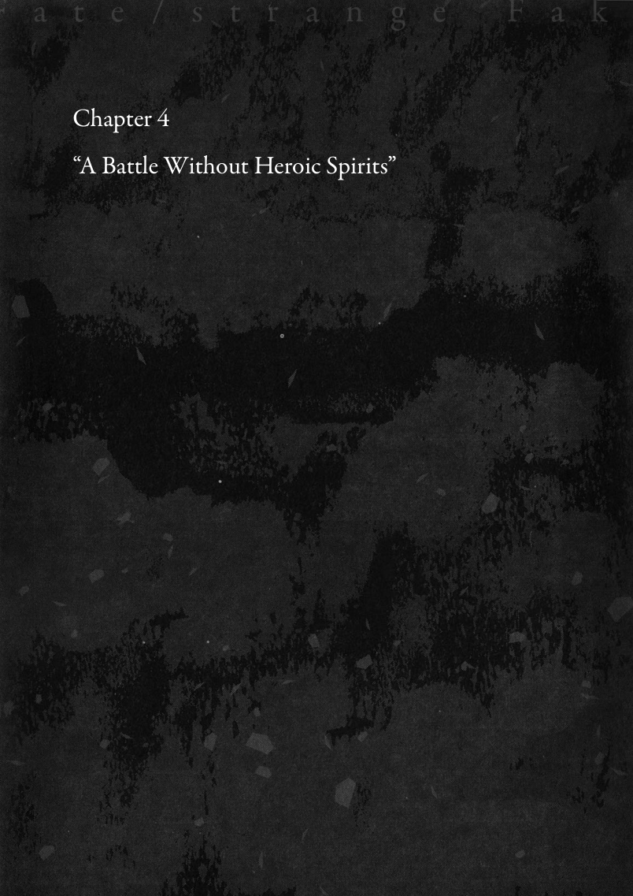
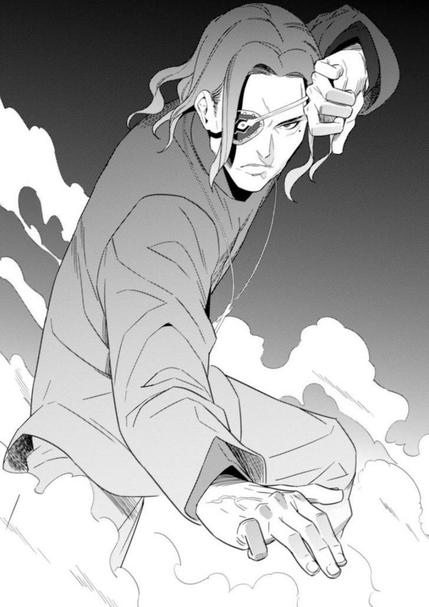

Capítulo 4: Dia 1, Antes do Amanhecer
Cerca de vinte anos antes. Aconteceu quando um sacerdote idoso chamado Dilo acabara de ser designado para uma região montanhosa da Espanha. Depois de ouvir de alpinistas histórias sobre espíritos malignos nas montanhas, o padre subiu até lá por conta própria... e deu de cara com um garoto solitário sentado na encosta, comendo alguma coisa ao lado de linces.
"O que você está comendo, menino?", perguntou. O garoto lançou um olhar desconfiado para ele e, sem dizer palavra, saltou por cima dos penhascos. Os aldeões que guiavam o sacerdote gritaram: "Um monstro! Ele deve estar comendo algum alpinista que se perdeu nas montanhas!", e fugiram, mas o próprio sacerdote decidiu seguir o garoto.
Logo descobriu que o menino não estava comendo nenhum ser humano. Adiante, na trilha, jazia a carcaça de um urso enorme, e ao lado havia vestígios de alguém preparando carne seca.
Então ele seca a própria carne. Hum. Isso não me parece besta demoníaca nenhuma, pensou o padre, e continuou.
O garoto que havia fugido antes bloqueou seu caminho. "Você é uma pessoa, velho? Ou é um duende?" Ainda havia algo de infantil no menino que fizera uma pergunta tão estranha. O sacerdote respondeu, intrigado.
"Agora eu me pergunto. Do meu ponto de vista, sou uma pessoa, mas talvez eu seja um duende do seu. Também não sei se você é uma pessoa ou um duende."
"..." "Mas, seja homem ou monstro, não acha que talvez possamos nos dar bem?" Dilo persistiu pacientemente em suas tentativas de contato, na esperança de que suas palavras chegassem até ele. E, à medida que continuava, aos poucos o garoto começou a falar de si mesmo.
Dizem que o Caminito Del Rey é a trilha mais perigosa da Terra. Pelo jeito como o garoto contava, o caminho adiante — escondido pela estrada da montanha — que levava às ruínas onde ele vivia sozinho talvez fizesse aquela trilha de penhasco parecer modesta.
Quando lhe perguntaram sobre a família, respondeu que até pouco tempo antes aquilo havia sido uma comunidade — praticamente uma aldeia — de várias dezenas de pessoas.
"Existem duendes que se dão bem com pessoas fora das montanhas?" "Sim. O mundo é vasto; se você procurar, existe. Provavelmente há até duendes
que formam família com pessoas."
As palavras do velho sacerdote soavam estranhas na boca de um homem de Deus. "É mesmo? O duende que eu vi não parecia muito amigável." "?" Num tom absolutamente casual, o garoto contou o que havia visto. "Todo mundo na montanha... foi morto por um duende que sugava sangue." "..." "No fim, o duende também morreu. A mamãe matou ele. Mas ela morreu por causa dos ferimentos que recebeu naquela hora." O velho sacerdote, de propósito, não pressionou mais o assunto. Depois de várias outras subidas às montanhas, decidiu levar o garoto para a cidade.
Vários meses depois. O menino já vivia havia algum tempo num orfanato e tinha se adaptado por completo à vida na vila quando um novo sacerdote chegou à cidade. Era um pouco mais jovem que Dilo, tinha um rosto lânguido e estava no auge da vida.
O sacerdote desconhecido resmungava com Dilo diante de Hanza, que havia sido chamado ao jardim do orfanato.
"Quero dizer, ahn... bispo Dilo... por que eu?" "Bem, entre todos os meus conhecidos, você me parece o melhor em kung fu e artes marciais. Ouvi dizer que este garoto gosta dessas coisas. Um rapaz tão forte assim aprenderá a importância da harmonia com mais facilidade se a lição vier de alguém mais forte do que ele. Não acha?"
Hanza percebeu que aquele padre, que se esforçava ao máximo para não encontrar o olhar de ninguém, fora chamado à cidade por causa dele. Devia ter relação com o que acontecera no outro dia. Ele dissera que queria fazer o que fazia quando vivia nas montanhas, envolvera as crianças das redondezas nisso e, como resultado, quase ferira gravemente uma delas.
Acabei causando problemas para o Sr. Dilo. Hanza se sentiu abatido ao pensar nisso, quando o sacerdote, ainda evitando cruzar os olhos com alguém, voltou a se dirigir a Dilo.
"Ahn, diga, Vossa Excelência? Se a questão é treinar uma criança em artes marciais, Father Kotomine não serviria também? O Baji Quan dele é nível mestre. E ele também é um amigo próximo seu."
"Ouvi dizer que Risei assumiu uma tarefa importante no Japão. Não sou especialista nessa área, mas aparentemente é algo muito importante. Além disso, ele já tem um filho."
"Ah... O senhor está, por acaso, insinuando que eu devo cuidar dele como se fosse meu próprio filho...?" "Você disse que queria um sucessor capaz, não foi? Pois bem, este garoto é fisicamente mais forte do que a maioria e aprende rápido. Ensine a ele o jeito certo de usar essa força."
"...Tem certeza de que o senhor não está procurando um instrutor de dojo?" O sacerdote estranho soltou um suspiro, então chamou Hanza. "Quer ganhar um dinheirinho?" "Posso?" "Pode. Eu te dou, se você conseguir 'pegar'", disse o padre sem olhar para ele... e lançou uma moeda de prata estrangeira com a força de uma bala.
Francamente. O bispo não deve conhecer meu outro lado, ou não teria pedido isso com tanta tranquilidade... Aquela moeda de prata deveria ter passado cerca de um metro ao lado de Hanza e se cravado na madeira ao fundo.
Ainda assim, eu definitivamente me sentiria culpado por arrastar uma criança para isso. O conhecido de Dilo aparentemente presumira que, se assustasse um pouco o garoto, ele recusaria por conta própria. No entanto...
No mesmo instante em que disparou, o garoto saltou na direção da moeda de prata e a apanhou com destreza. A moeda fora lançada com força suficiente para perfurar madeira. E ele a segurou com a mão nua.
"...Hm?" Pela primeira vez, o sacerdote de meia-idade olhou para o garoto. O menino fitava a moeda na própria mão com os olhos brilhando e um sorriso inocente. "Uau! Uma moeda de prata! Obrigado, Father!" Dilo observou a cena com um sorriso afável e acrescentou mais informações sobre o garoto. "O treinador da academia local de artes marciais me informou que não consegue lidar com ele lá." Aquilo devia ser uma resposta ao comentário anterior sobre "instrutor de dojo". Ainda com um sorriso bondoso no rosto, o velho sacerdote continuou: "Afinal, em artes marciais normais, ele muito bem poderia parar o coração do adversário sem nem precisar ficar sério."
Depois de observar o garoto por algum tempo, o sacerdote de meia-idade perguntou: "Ahn, bem... você se importaria de me dizer seu nome?" "É Hanza", respondeu prontamente o menino. Encontrando o olhar dele, o padre disse o próprio nome. "Eu sou Delmio Cervantes... Ahn, prazer em conhecê-lo."
Vinte anos se passaram. O velho sacerdote Dilo havia desejado para ele apenas "uma vida saudável". Seu pai adotivo, Delmio, só quisera ver o que aconteceria se treinasse uma criança com aquele físico fora do comum. Depois de muitas voltas e reviravoltas, ele acabara realizando os dois desejos.
O garoto criado nas montanhas cresceu saudável e forte, cantando as glórias da vida. Estranhamente, acabou abraçando uma profissão ligada aos monstros que haviam atacado sua aldeia — os
Apóstolos Mortos.
Ele se tornou um executor, alguém que elimina em nome de Deus os seres do mal absoluto.
O presente. O saguão da delegacia.
"Fui descuidado... muito descuidado..." A risada baixa de Jester ecoou além da parede demolida. "Sim! Admito: acabei de ser descuidado! Então é isso que chamam de 'soberba'! Que experiência maravilhosa! Parece que é verdade mesmo que a soberba é o veneno que encurta a vida dos fortes!"
De forma inquietante, só a voz dele podia ser ouvida. O chefe e seus oficiais observavam o desenrolar dos acontecimentos prendendo a respiração. Hanza, porém, plantou-se bem diante do buraco e falou.
"Não seja tão humilde. Você não foi descuidado nem um pouco. Estava levando a sério desde o começo. Respeito isso. Sensacional."
"..." "Você estava dando tudo de si quando eu te acertei. Estou errado?" A risada sumiu diante da provocação descarada de Hanza. "Não suporto você, padre. Nem um pouco. Você é... um executor?" Executor. O chefe também conhecia esse nome. Um grupo armado que alegava representar o poder e o julgamento de Deus. Diferentemente dos exorcistas, que apenas expulsavam temporariamente seus alvos, os executores tomavam como princípio aniquilar por completo espíritos malignos, demônios, Apóstolos Mortos e outras existências que, do ponto de vista doutrinário, não deveriam existir. Naturalmente, só eram nomeados para o cargo aqueles que possuíam poder para desafiar tais entidades. Serviam em uma guerra completamente diferente da travada pelo Santo Graal.
"Estou de licença", respondeu Hanza com frieza. "Hoje estou aqui como supervisor." A voz vinda do buraco cessou. No instante seguinte, incontáveis pedaços de entulho foram lançados para fora da abertura na parede.
Se alguém dissesse que tinham carregado um canhão gigante com destroços e disparado, acreditariam. Na verdade, teriam dificuldade em acreditar em qualquer outra explicação.
Hanza tirou do bolso vários objetos que pareciam empunhaduras de espada e os encaixou entre os dedos das duas mãos. Um instante depois, lâminas prateadas se materializaram nas empunhaduras e deram às mãos de Hanza o contorno de garras gigantes.
Black Keys — empunhaduras que manifestam lâminas quando se faz passar energia mágica por elas. Uma
das armas essenciais de um executor.
Sem perder um único instante, Hanza impulsionou-se do chão e se atirou de frente contra o entulho. Os braços do padre ondularam como miragem de calor. No instante seguinte, a saraivada de escombros, que incluía blocos de concreto com mais de um metro, virou névoa e passou por seu corpo.
Mais precisamente, apenas pareceu passar por ele. O entulho diante de Hanza fora pulverizado pedaço por pedaço e espalhado pelo saguão. Que velocidade, que técnica de espada ele precisava ter para realizar algo assim?
O chefe mal conseguiu acompanhar os movimentos com os olhos, mas, se lhe perguntassem se seria capaz de segui-los, a resposta seria não.
"Agora entendo por que você se manteve calmo mesmo quando nós o cercamos", murmurou o chefe. "Quem sabe?", respondeu Hanza sem se virar. "Os Fantasmas Nobres de vocês não funcionam contra Apóstolos Mortos, mas funcionariam contra mim. No fim das contas, tudo se resume à 'compatibilidade'. Se fossem só os atributos que decidissem tudo, a Guerra do Santo Graal viraria uma corrida para invocar Berserker."
Verdade, pensou o chefe. Ele havia recebido informações de que os Einzbern, na quinta Guerra do Santo Graal, tinham invocado um grande herói do mais alto nível como Berserker, usando Aprimoramento da Loucura para elevar seus parâmetros. Não conhecia os detalhes daquela guerra, mas, no mínimo, não recebera nenhuma informação sugerindo que os Einzbern tivessem obtido o Graal.
"Os Einzbern sempre vão ao extremo", dissera Francesca. "Quando tentam trapacear e fracassam, na vez seguinte invocam um grande herói para um assalto frontal. Quando isso também dá errado, transformam outro grande herói em Berserker e elevam seus atributos o máximo que podem, e por aí vai. Custa tanto assim relaxar e aproveitar a guerra?"
A afinidade importava mais do que as estatísticas numa Guerra do Santo Graal. Era essencial tirar proveito das peculiaridades de cada Servo e de cada Mestre. Muitas vezes, até a sorte precisava entrar no cálculo.
Podia-se dizer que a sorte estava sorrindo para eles naquele momento. Era fato que haviam estado em lados opostos a Hanza e não pretendiam deixá-lo retornar à Igreja. Agora, porém, o chefe agradecia aos céus pelo sacerdote não ser seu inimigo.
Hanza estava prestes a repelir a enésima saraivada de escombros quando vislumbrou, por uma fresta entre os destroços no ar, um tecido que reconheceu. No instante em que percebeu que era o terno que Jester usava, Hanza se livrou dos maiores fragmentos e cruzou as "garras" de Black Key diante do coração, assumindo o risco com o resto.
A mão em forma de faca de Jester investiu exatamente naquele ponto com a força de um bate-estaca. Jester saltou de novo, tentando emendar o ataque em Hanza, que fora arremessado para trás pela força do impacto. Hanza, por sua vez, tentou seu próprio contra-ataque. As lâminas dos Black Keys e as garras do Apóstolo Morto se chocaram. Quando mão e lâmina se encontraram, sons
metálicos inacreditáveis e o cheiro de carne queimada começaram a encher o recinto.
"Escolha tola, Hanza Cervantes! Derrotar-me não significa abandonar sua neutralidade como supervisor!? Você imagina mesmo que pode sair impune dessa injustiça!?"
"Ora, eu nunca ouvi nada sobre você ser Mestre!" Eles haviam chegado a um impasse, cada um desferindo sucessivos golpes destinados a perfurar o coração do outro, apenas para serem interceptados pelo adversário. O fato de continuarem conversando no meio de uma luta tão mortal quanto aquela podia ser uma tentativa de induzir o outro a deixar uma abertura, ou simplesmente fruto da pura exaltação do momento.
"Eu acabei de declarar isso diante de Assassin!" "Ah, foi? Porque me pareceu que a Serva queria negar a sua existência inteira!" "Isso só a torna... ainda mais bela!" "Ha! Isso não é resposta!" Fosse bravata ou algum tipo de perversão, o padre e o Apóstolo Morto riam enquanto lutavam. Saltavam de colunas e paredes, usando-as como novos apoios em seu duelo até a morte. A cada salto, rachaduras se abriam no chão e nas colunas, gravando nos olhos atônitos da polícia o fato de que aquela batalha se travava num plano sobre-humano. E aquela visão permaneceria restrita a eles por apenas mais alguns segundos.
Jester recebeu de propósito um chute que Hanza lançara como finta. Aproveitando a força dele, projetou-se em direção à entrada principal, atravessou a porta giratória de vidro reforçado e voou para fora, em direção à cidade. Era como se quisesse atrair o executor para o lado de fora, ao centro de Snowfield.
Ainda não amanhecera, mas havia incontáveis pessoas nas ruas.
Main Street. Perto do cassino.
"Hm...?" Um Cadillac conversível, envolto em sua característica aura de classe. Gilgamesh, sentado com um ar altivo e apoiando as mãos nos encostos dos bancos traseiros, franziu levemente a testa ao voltar os olhos para a estrada adiante.
Uma mulher de preto, com o rosto tenso — subordinada de Tiné — era quem dirigia o carro. Tiné, que já havia desfeito sua invisibilidade, estava sentada no banco do passageiro, dócil como uma boneca.
O carro havia sido colocado como parte da decoração do cassino, mas Gilgamesh o
tomara para si por ter gostado dele, obtendo-o em troca de metade das fichas que ganhara em suas grandes vitórias. A administração do cassino abrira uma exceção especial para ele. Gilgamesh tinha tantas fichas que, se de fato as trocasse, poderia comprar quantos Cadillacs quisesse diretamente de um concessionário, então o acordo tampouco fora ruim para eles. Gilgamesh concluíra com rapidez a papelada da transferência no nome da subordinada de Tiné e deixara o cassino de excelente humor.
Mas então notou a comoção mais adiante. Curiosos começavam a se reunir ao redor do estacionamento de um prédio grande mais à frente na rua. De tempos em tempos, um estrondo ecoava.
"...A delegacia", murmurou Tiné, olhando na mesma direção. Ela também havia percebido que havia algo errado.
Então vários carros-patrulha, que presumivelmente estavam estacionados ali, subiram aos céus com um rugido ensurdecedor. E aquelas duas figuras humanas não estariam serpenteando pelos vãos entre os carros?
A cena absurda pôs Tiné em guarda, imaginando uma batalha entre Servos, mas... por mais que observasse aquelas formas, não conseguia sentir em nenhuma delas a presença característica de um Servo.
"Não são Espíritos Heroicos...?" Surpresa, empregou magia de visão à distância para observar melhor as figuras. "Aquele é... o padre que estava no cassino mais cedo, e... o que é aquele outro homem?" Tiné olhou para Gilgamesh em busca de uma resposta. Gilgamesh, que aparentemente os enxergava a olho nu, respondeu num tom transbordando confiança:
"Hum. Não sei ao certo." Declarou sua própria ignorância sem o menor constrangimento e em seguida expôs sua opinião simples. "Não sei ao certo... mas posso dizer que não é homem algum. Provavelmente é algum tipo de monstro grande ou aparição. Se entrar no meu caminho, eu o eliminarei, mas não tenho interesse particular nele."
Sua Majestade provavelmente não se interessa muito por nada além de humanos, pensou Tiné. A divindade em sua aura também estava consideravelmente mais atenuada do que deveria. Quando ela o questionara sobre isso, tudo o que ele dissera fora: "Rompi meus laços com aquela gente. Não preciso da proteção deles", mas Tiné se perguntava se aquela atitude dele não tinha algo a ver com isso.
Como que para confirmar sua suspeita, Gilgamesh pareceu se interessar mais pelo sacerdote. Ele fixava o olhar no homem do tapa-olho, de capacidades sobre-humanas.
"A profundidade do pecado humano, porém, é espantosa", murmurou. "?" O Rei dos Heróis colou um sorriso irônico no rosto e continuou, sem dar a menor atenção ao olhar interrogativo de Tiné pelo retrovisor.
"Pensar que aquele padre ainda não foi reduzido a uma ferramenta de seu deus... com um corpo desses."
A delegacia. Estacionamento.
Jester desferiu um chute poderoso num dos carros-patrulha que voavam pelo ar. Hanza o cortou ao meio e lançou vários Black Keys pelo vão criado na carcaça partida. Jester deteve as lâminas segurando-as com as mãos, sorrindo sem medo enquanto sangue e fumaça escapavam de suas palmas.
"Temos plateia, sabia? O que aconteceu com manter a Guerra do Santo Graal em segredo?" "Este 'trabalho' não tem nada a ver com a guerra", respondeu Hanza, usando um carro como apoio para saltar ainda mais alto, "então não vai haver problema."
Na verdade, do ponto de vista da Igreja, havia, e muito. Talvez Hanza tivesse preparado algum tipo de contramedida, porque parecia totalmente imperturbável diante dos olhares curiosos da multidão.
"Então você quer tanto me matar assim a ponto de abandonar seus deveres como supervisor? Já lhe disse antes: eu sou um dos Mestres que você deveria proteger."
"...A Igreja Sagrada se envolveu na Guerra do Santo Graal para ocultar um milagre e preservar a paz para a humanidade. Eu estaria apto a ser seu supervisor se tolerasse sequer a possibilidade de esse milagre cair nas mãos de um vampiro?"
"Então é assim que você quer me matar tanto. Você perdeu um pai ou um amante para os Apóstolos Mortos?" Hanza esperou até que tivessem trocado golpes por alguns segundos e tornado a pousar no chão para responder à provocação.
"Bem, eles realmente mataram o meu clã inteiro... mas, para ser sincero, eu não guardo rancor por isso." Enquanto materializava as lâminas de novos Black Keys, Hanza começou a explicar suas razões para lutar.
"Não é como se eu odiasse todos os vampiros. Talvez me digam que isso me torna inadequado para ser executor, mas eu não faço esse trabalho por ódio aos Apóstolos Mortos, nem mesmo por fé no Senhor."
"Então por que estamos tentando matar um ao outro? Qual é o sentido desta batalha?" A gasolina que havia vazado de um carro-patrulha pegou fogo, e as redondezas foram engolidas pelas chamas. Já era amanhecer e havia cada vez mais curiosos, mas, milagrosamente, aquelas chamas chamativas acabaram ocultando a dupla de seus olhares.
"Você age e fala como um vilão, não importa por onde eu olhe. Isso não basta para você?" "...Tudo o que você faz e diz me irrita profundamente. Quer dizer que você mata Apóstolos Mortos por diversão, sem convicção nenhuma? Você é tão hediondo quanto aquela Assassin é bela."
Jester sorria com a boca, mas seus olhos lançavam ódio contra Hanza. Hanza simplesmente ignorou a hostilidade do Apóstolo Morto ao responder.
"Eu não me importo de deixar passar um Apóstolo Morto que viva em silêncio e humildade, reprimindo os próprios impulsos. Falando nisso, ouvi dizer que existe um Apóstolo Morto obcecado por comida humana, que resiste aos próprios instintos para continuar cozinhando... Fico pensando se é verdade."
"Como eu vou saber?" Jester abriu os braços, apagou o sorriso do rosto e então cruzou-os com força diante do peito. Uma chuva de sangue voou de suas mãos. Ao mesmo tempo, um vento feroz se ergueu e formou um tornado em miniatura. Então, talvez como resultado de sua magia, as chamas ao redor dele se "fundiram" com o vento. Não era apenas que o vento tivesse atiçado o fogo e o feito crescer; parecia que as próprias correntes de ar tinham se tornado fogo. O redemoinho vermelho investiu contra Hanza.
"Ngh...!" Hanza mal conseguiu se esquivar, apagando o sorriso do rosto pela primeira vez. Procurou Jester enquanto a onda de calor avançava, mas o Apóstolo Morto já tinha desaparecido de onde estivera.
Para onde ele foi? Enquanto Hanza se perguntava isso e olhava ao redor, deixou uma abertura momentânea. Jester não a desperdiçou. Estendeu uma mão de dentro do tornado de chamas e agarrou o braço de Hanza.
"!" "Peguei você!" O Apóstolo Morto puxou Hanza em sua direção com uma força muito além da humana e investiu com a outra mão para perfurar seu pescoço. Jester tinha certeza de que sua mão em forma de faca daria fim ao executor antes que ele tivesse chance de brandir um Black Key com a mão livre.
No instante seguinte, porém, sua expectativa foi traída pelo contra-ataque inesperado de Hanza.
Clang. Um som mecânico sacudiu os tímpanos de Jester. Um momento depois, ele percebeu que a mão que segurava o braço de Hanza havia se soltado. Ou melhor, fora arrancada à força. Uma lâmina surgira de algum lugar e decepado todos os dedos daquela mão.
"...!" Jester recuou um grande passo e fulminou Hanza com os olhos, enquanto este apanhava tranquilamente um Black Key. Então viu. A manga do sacerdote estava rasgada... e, por baixo dela, brotara uma lâmina com as mesmas propriedades de um Black Key.
"Maldito... Um braço protético!"
"Eu não mencionei? Sete décimos do meu corpo são engenhocas consagradas para enfrentar monstros como você."
"Estou chocado. Quem diria que a Igreja tinha a tecnologia." "A Igreja existe para guiar as pessoas. Por que não teria a ponta de lança tanto da tecnologia quanto dos mistérios? Não que eu entenda muito disso."
Hanza falou displicentemente enquanto repassava a sequência de acontecimentos que acabara de ocorrer. Ao fazer isso, percebeu que os dedos de Jester, que tinha certeza de ter decepado, estavam de volta na mão dele. Até então havia atribuído isso ao poder regenerativo característico de um Apóstolo Morto, mas algo lhe dizia que o modo como Jester se curava era diferente dos vampiros que costumava enfrentar.
"Aquele vento... é o seu poder?" "Sinto muito, mas sou um homem cauteloso. Não tenho a menor intenção de explicar o que posso fazer." Jester lançou a Hanza um olhar irritado, então cravou a mão na carcaça de um carro-patrulha que ardia por perto e segurou sua estrutura. Erguendo o veículo inteiro com uma mão, arremessou-o contra Hanza com a força de uma bola de beisebol. Hanza levantou uma perna e deteve o carro, depois o empurrou de volta com a força das molas místico-mecânicas embutidas na parte inferior do corpo.
O Apóstolo Morto saltou por cima do veículo e correu pela lateral do prédio da delegacia. O sacerdote o perseguiu sem hesitar, juntando-se à corrida vertical. Pelo fato de deixar feridas profundas na lateral do prédio por onde passava, devia estar usando algum tipo de dispositivo, mas ainda assim era um feito que nenhuma pessoa comum seria capaz de imitar.
Quando Hanza alcançou o telhado, foi recebido por um batismo de submetralhadora. Jester fez a arma das forças especiais da polícia, que devia ter pegado sem que ninguém percebesse, cuspir uma chuva de balas. Ao mesmo tempo, disparou também uma escopeta — equipamento policial igualmente — com a mão esquerda. Uma quantidade de projéteis suficiente para transformar qualquer homem comum em carne moída fechou-se sobre Hanza.
Naquele instante, porém, o corpo de Hanza pareceu ondular como miragem de calor. Ele se esquivou da maior parte das balas sem sequer usar seus Black Keys, e rebateu algumas no ar com a própria mão. A cena, saída diretamente de um filme de ação, arrancou de Jester um elogio sem afetação.
"De fato, entre todos os executores que já vi, você está entre os melhores!" "Adulação não vai me fazer pegar leve com você." "Eu apenas disse a verdade. Essa sua força... Será que você faz parte da 'Agência Mortuária' de que tanto ouvi falar?"
Existe uma organização chamada Agência Mortuária, formada pela elite absoluta dos executores. Seus membros têm poder para enfrentar os "Vinte e Sete Ancestrais", conhecidos como o ápice da espécie vampírica. Entre os Apóstolos Mortos, seus nomes são transmitidos como lenda, terror e advertência, pois se diz que às vezes eles abatem seus alvos sozinhos.
Jester mencionara a Agência Mortuária como forma de expressar respeito pela força do adversário. Hanza, porém, apagou o sorriso satisfeito do rosto e franziu levemente a testa ao falar.
"Agência Mortuária...? Eu?" O sacerdote balançou a cabeça, visivelmente enojado, como se dissesse: "Você não sabe de nada." "Você fala umas coisas engraçadas, cadáver. Eu não chego nem perto deles. Não vou deixar você me colocar no mesmo nível."
"O quê?" Jester franziu as sobrancelhas. "É verdade, eu sou capaz de causar em gente como você o estrago de um míssil nuclear ou de uma arma química, mas arma nenhuma feita pelo homem poderia se comparar àquelas figuras exaltadas que caminham à sombra do Senhor! Cada uma delas distribui cataclismos, executa as obras do próprio Senhor... Destrói o mal que invadiu o domínio do Senhor com o poder do próprio Senhor. Esse é o domínio delas, como ápice dos executores. Compará-las a alguém como eu não é nada além de um insulto."
Hanza estabilizou a respiração em silêncio e assumiu uma postura que parecia séria. "Você invadiu apenas o domínio do homem. Então eu vou destruir você... com poder humano!"

A postura parecia baseada em algum tipo de arte marcial. No momento em que a viu, Jester sentiu cada célula do corpo estremecer.
Entendo. Então agora ele ficou sério. Não tinha certeza de que perderia, mas sabia que seria impossível afastar aquele homem sem revelar até o último fragmento de seu verdadeiro poder.
Não seria prudente abrir minha mão para os outros magos e para os Espíritos Heroicos enquanto a Guerra do Santo Graal ainda está só nos primeiros movimentos.
Nunca se sabia de onde um familiar podia estar observando. Jogadores que se lançavam em batalha aberta, confiando em Fantasmas Nobres — como a polícia mais cedo —, não o preocupavam. Mas, se estivesse diante de um mago realmente poderoso, revelar as próprias habilidades seria o mesmo que contar seus pontos fracos.
Além disso, ele havia percebido algo do alto do telhado. A leste, o céu noturno perdia a cor e começava gradualmente a clarear. Em outras palavras, não demoraria para que a manhã chegasse àquele lugar.
"...Acho que já está na hora. Por hoje, vou me limitar a deixá-lo com uma saudação." Jester se virou e saltou na direção do hotel ao lado. Mas...
"Você não vai a lugar nenhum." Com um ruído mecânico alto, a mão direita de Hanza disparou na direção de Jester. Ele ainda segurava os Black Keys — que havia rematerializado —, então seu braço projetado era como um garfo afiadíssimo. Estendeu-se como a língua de uma rã para agarrar Jester em pleno salto. No último instante, porém, o braço mecânico parou a um triz do alvo. Jester torcera o corpo instintivamente no ar e se colocara em guarda, exibindo um sorriso aliviado. Até que...
Crac. Outro ruído mecânico soou, o pulso na ponta do braço estendido se abriu, como se tivesse se partido, e algo foi disparado da cavidade em seu interior.
"Quê—" Quando Jester percebeu que se tratava de um projétil explosivo, algo como uma granada, já era tarde demais.
A ogiva impregnada de água benta penetrou em seu abdômen e explodiu.